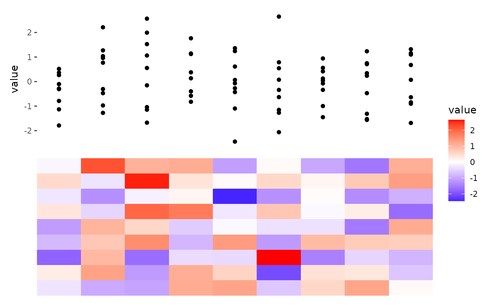
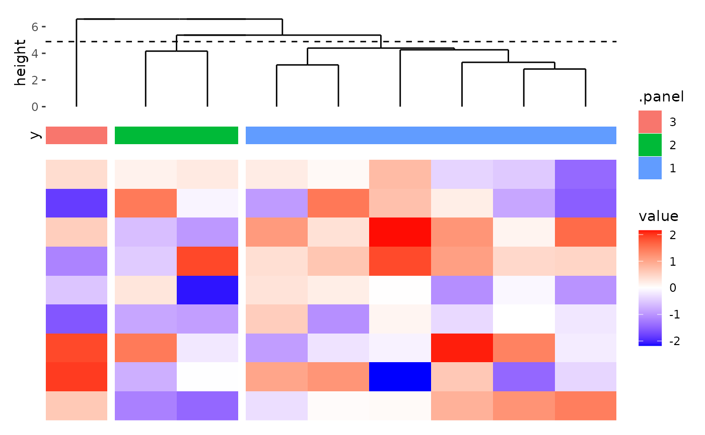

![[Stable]](figures/lifecycle-stable.svg)
align_gg() is similar to ggplot in that it initializes a ggplot data
and mapping. Same with other align_* functions. align_gg() allowing you
to provide data in various formats, including matrices, data frames, or
simple vectors. By default, it will inherit from the layout. If a function,
it will apply with the layout matrix. ggalign is an alias of align_gg.
Usage
align_gg(
data = waiver(),
mapping = aes(),
size = NULL,
limits = TRUE,
facet = TRUE,
no_axes = NULL,
active = NULL,
set_context = deprecated(),
order = deprecated(),
name = deprecated(),
free_guides = deprecated(),
free_spaces = deprecated(),
plot_data = deprecated(),
theme = deprecated(),
free_labs = deprecated()
)Arguments
- data
A flexible input that specifies the data to be used
NULL: No data is set.waiver(): Uses the layout matrix.A
function(including purrr-like lambda syntax) that is applied to the layout matrix, and must return a matrix. If you want to transform the final plot data, please usescheme_data().A
matrix,data frame, or atomic vector.
- mapping
Default list of aesthetic mappings to use for plot. If not specified, must be supplied in each layer added to the plot.
- size
The relative size of the plot, can be specified as a
unit.- limits
Logical; if
TRUE, sets layout limits for the plot.- facet
Logical; if
TRUE, applies facets to the layout. IfFALSE,limitswill also be set toFALSE.- no_axes
![[Experimental]](figures/lifecycle-experimental.svg) Logical; if
Logical; if TRUE, removes axes elements for the alignment axis usingtheme_no_axes(). By default, will use the option-"ggalign.align_no_axes".- active
A
active()object that defines the context settings when added to a layout.- set_context
![[Deprecated]](figures/lifecycle-deprecated.svg) Please use
Please use activeargument instead.- order
- Please use
activeargument instead. - name
- Please use
activeargument instead. - free_guides
![[Superseded]](figures/lifecycle-superseded.svg) Please use
Please use
scheme_align()function instead.- free_spaces
- Please use
scheme_align()function instead. - plot_data
- Please use
scheme_data()function instead. - theme
- Please use
scheme_theme()function instead. - free_labs
- Please use
scheme_align()function instead.
ggplot2 specification
align_gg initializes a ggplot data and mapping.
align_gg() always applies a default mapping for the axis of the data index
in the layout. This mapping is aes(y = .data$.y) for horizontal stack
layout (including left and right annotation) and aes(x = .data$.x)
for vertical stack layout (including top and bottom annotation).
The data in the underlying ggplot object will contain following columns:
.panel: the panel for the aligned axis. It meansx-axisfor vertical stack layout (including top and bottom annotation),y-axisfor horizontal stack layout (including left and right annotation)..x/yand.discrete_x/.discrete_y: an integer index ofx/ycoordinates and a factor of the data labels (only applicable when names exists)..names(vec_names()) and.index(vec_size()/NROW()): a character names (only applicable when names exists) and an integer index of the original data..row_namesand.row_index: the row names and an integer of row index of the original matrix (only applicable ifdatais amatrix)..column_namesand.column_index: the column names and column index of the original matrix (only applicable ifdatais amatrix).value: the actual value (only applicable ifdatais amatrixor atomic vector).
matrix input will be automatically melted into a long foramted data frame.
Atomic vector will be put in the value column of the data frame.
In the case where the input data is already a data frame, following columns
(.panel, .index, .names, .x/.y, .discrete_x/.discrete_y) are
added to the data frame.
It is recommended to use .x/.y, or .discrete_x/.discrete_y as the
x/y mapping.
If the data inherits from quad_layout()/ggheatmap(), an additional
column will be added.
.extra_panel: the panel information for column (left or right annotation) or row (top or bottom annotation).
Axis Alignment for Observations
It is important to note that we consider rows as observations, meaning
vec_size(data)/NROW(data) must match the number of observations along the
axis used for alignment (x-axis for a vertical stack layout, y-axis for a
horizontal stack layout).
Examples
ggheatmap(matrix(rnorm(81), nrow = 9)) +
anno_top() +
ggalign() +
geom_point(aes(y = value))
#> → heatmap built with `geom_tile()`

# if data is `NULL`, a data frame with following column will be created
# (`.panel`, `.index`, `.names`, `.x`/`.y`, `.discrete_x`/`.discrete_y`)
ggheatmap(matrix(rnorm(81), nrow = 9)) +
anno_top(size = 0.5) +
align_dendro(k = 3L) +
ggalign(data = NULL, size = 0.2) +
geom_tile(aes(y = 1L, fill = .panel))
#> → heatmap built with `geom_tile()`
